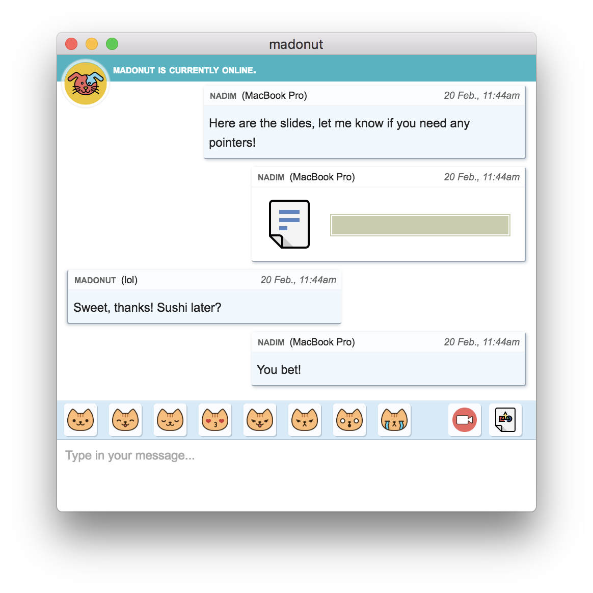

Chatta con i tuoi amici, in modo sicuro.
Cryptocat è software libero con una missione semplice: tutti dovrebbero essere in grado di chattare con i propri amici in privato.
- Open source. Tutti i software Cryptocat sono pubblicati in modo trasparente.
- Crittografato per impostazione predefinita. Ogni messaggio è crittografato, sempre.
- Inoltro sicuro. Le chat sono sicure anche se le chiavi vengono rubate.
- Dispositivi multipli. I dispositivi ricevono messaggi anche in modalità offline.
- Condivisione di file. Condividere file condivisi con gli amici.